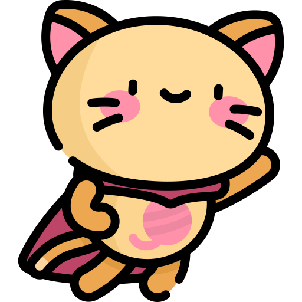
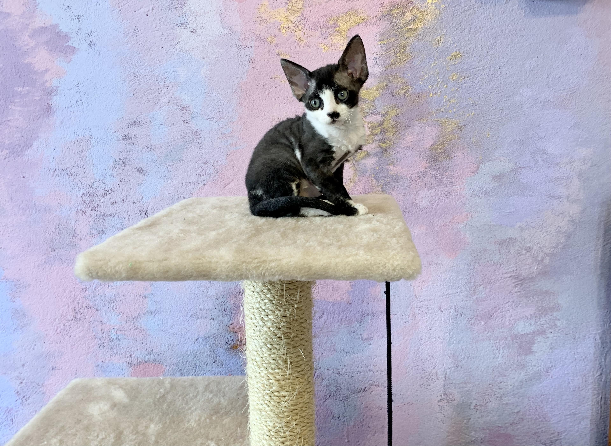

Девон-рекс - очень умная, уникально выглядящая порода кошек, известная своей волнистой шерстью и большими ушами. Из-за больших ушей котов этой породы ещё называют эльфами. Также эти коты известны своей игривостью, лаской и дружелюбием! Удивительного девон-рекса можно купить в г. Минске.
Краткая информация:
Вес:
Самец:
малого размера < 3 кг
Самка:
малого размера < 3 кг
Покров:
Длина шерсти:
короткая
Тип шерстки:
вьющаяся
Ожидания:
Продолжительность жизни:
9-13 лет
Потребность во внимании:
умеренная
Признание:
Ассоциациями заводчиков кошек:
FA, ACFA, FIFa, TICA
Склонность к линьке:
низкая
Преимущества:

Активные и игривые
Если вам нужен кот с которым вы не захотите играть и просто обращать на него внимание, то не заводите Девон-рекса, купите британца или мэйн-куна. Коты этой породы очень активны: готовы играть и бегать без перерыва, особенно котята. И только сон останавливает бесконечные игры и беготню. Девона ещё называют обезьяной потому что он стремится запрыгнуть как можно выше (желательно к потолку, ну а потом будет посматривать на люстру:)). И правда в том, что они действительно способны запрыгнуть на значительную высоту; нередко стараются занять минимально вмещающий их уголок, например, на полках или между предметами.
Умные и сообразительные
По мнению многих, самые умные кошки определяются по следующим признакам:
* Приучаемость к лотку/когтеточке.
* Реакция на собственную кличку.
* Умение придерживаться определенных правил поведения (не залезать на стол, не воровать пищу, не справлять нужду в обувь).
* Способность находить общий язык с людьми, отсутствие беспричинной агрессии.
* Обучаемость на протяжении жизни.
* Любопытство и любознательность.
И всё вышеизложенное сочетается в одном коте породы девон-рекс.
Дружелюбные
Очень любят сидеть на ручках, шее или на плечах. Всегда хотят дружить и будут ходить за Вами по дому хвостиком. Любят детей и абсолютно не агрессивны, девонам не присуще чувство ревности. Любят играть и быть частью всего, чем занимается хозяин, в том числе делить с ним постель. Стоит коту этой породы почувствовать ваше тёплое отношение и он не будет отходить от вас ни на шаг.
Социальные
Всегда рады посидеть на ручках и помурлыкать. Им постоянно нужен человек. Они будут ждать Вас домой и очень радоваться Вашему возвращению.
Если поставить выбор: еда или человек (положить еду и уйти в другую комнату, когда Вас долго не было и кот соскучился), то кот пойдёт за человеком.
Гипоаллергенные
Животные этой породы реже вызывают аллергию из-за шерсти девонов — короткая, мягкая и практически лишенная остевых волос. Но к сожалению 100% гарантии, что аллергии не будет дать невозможно.
Обучаемые
Котов этой породы сравнивают с собаками, потому что они поддаются дрессировке, а также сами приносят игрушки чтобы с ними поиграли или будут приносить клочок бумаги снова и снова (как собака приносит палку). Кроме того, девон-рексы особенно отличаются любопытством. Чем бы Вы не занимались кот будет рядом (будет «помогать» готовить, убирать, стирать). Коты проявляют живой интерес ко всему происходящему в доме.
История рода:
Девон - Рекс - порода домашних кошек, появившаяся не так давно, но далеко от Республики Беларусь (г. Минска) в 1960-х гг. в г. Бакфастлей (графство Девоншир) в Англии около заброшенного оловянного рудника в выводке диких котят. Так что это дикая порода с хищными повадками. В тот год среди одичавших кошек в окрестностях отработанного рудника в Бакфестлеге был замечен кот с удивительной кудрявой шерстью. Поймать кота не удалось, не смотря на многочисленные попытки. Но удалось поймать его спутницу - бездомную кошку "черепахового" окраса. Хозяйку, приютившую кошку, звали мисс Берил Кокс. Вскоре приблудная кошка окотилась. В помете один котенок был с необычной волнистой шерсткой. Котенка назвали Кирли, от английского слова "curly" - кудрявый.
К тому времени кошки с похожей кудрявой шерстью были уже известны заводчикам. В той же Англии в графстве Корнвалл почти 10 лет велись работы по созданию новой породы на основе мутации, возникшей в 1950 г. в помете одной из местных кошек. Один из котов этого помета имел волнистую шерсть кремового окраса. Тип шерсти вызвал у владельцев ассоциацию с мехом кроликов породы кастор рекс и это название перешло к созданной в дальнейшем породе кошек корниш-рекс. Однако волнистая шерсть котенка из Девоншира оказалась обусловлена совсем другой генетической мутацией. Это показали многочисленные попытки спаривания Кирли с кудрявыми кошками, потомками кота из Корнвалла. Появляющиеся от таких спариваний котята имели нормальную шерсть. Однако волнистая шерсть котенка из Девоншира оказалась обусловлена совсем другой генетической мутацией. Это показали многочисленные попытки спаривания Кирли с кудрявыми кошками, потомками кота из Корнвалла. Появляющиеся от таких спариваний котята имели нормальную шерсть. Надо сказать, что Кирли отличался не только волнистой шерстью. В нем уже были заложены признаки породы, усиленные и закрепленные последующей селекцией: широкая плоская голова с выдающимися скулами и низко посаженными необычно большими ушами, выразительные большие глаза, пропорциональное, компактное тело. Однако, прежде, чем порода была официально признана ведущими фелинологическими организациями мира прошли многие годы. Сначала порода получила признание в Европе. Первой организацией, зарегистрировавшей породу, была GCCF (фелинологическая организация Англии). Дальше последовало признание другими фелинологическими организациями, в том числе в 1967 г. крупнейшей - FIFE (Международной федерацией европейских любителей кошек) Девонов стали разводить не только в Европе, но и в Австралии, Новой Зеландии, и даже в Южной Африке и Колумбии. В США первые девоны попали в 1968 году. Их импортировала из Англии чета Уайтов. Эти преданные пионеры-заводчики породы до сих пор продолжают заниматься разведением девонов у себя в Техасе. Надо сказать, становление этой породы в Америке, ныне лидирующей в их разведении, происходило не просто. Крупнейшая фелинологическая организация Америки - CFA (Организация любителей кошек) - долго отказывалась признавать девон-рексов за новую породу, проводя судейство просто для "двух рексов", объединяя их с уже признанными и известными к тому времени корниш-рексами. Для того, чтобы сохранить и утвердить уникальную породу, энтузиасты-заводчики работали над ней самостоятельно, и благодаря их целенаправленной деятельности постепенно, одна за другой, породу стали признавать американские фелинологические организации. CFA осмелилась признать девон-рексов только в 1979 году, а в 1983 году наконец был открыт класс чемпионов. Таким образом CFA оказалась самой консервативной фелинологической организацией мира, признавшей породу последней. Не смотря на столь позднее признание, девон-рексы становятся все более популярными как порода именно в США, Канаде, России и Республике Беларусь (г. Минск). Порода стала настолько конкурентноспособной, что ее лучшие представители по праву делят призовые места в элитных списках национальных победителей.
Внешность:
Девон - Рексы имеют уникальную внешность. Большие глаза, округлая голова, короткая морда, выдающиеся скулы и огромные, как крылья бабочки, низко посаженные уши делают их похожими на эльфов. Шерсть - тонкая, нежная, немного кучерявясь и мягкая с небольшой короткой шёрсткой (интересно, что у беременных волны почти выравниваются из-за гормонов). У шерсти есть своеобразная текстура, так как эта мутация отличается от всех других типов шерсти и достаточно долго культивировалась.
Туловище среднего размера, изящно сложенное.
В отличие от других кошек, имеют очень короткие и сильно завитые усики, из-за чего может показаться, что усики у них вовсе отсутствуют. Девоны имеют длинные и крепкие лапы, маленькие и круглые подушечки, благодаря чему могут совершать длинные и высокие прыжки. В уходе девоны не привередливы: в расчёсывании/вычёсывании не нуждаются и большой плюс в том, что они не оставляют клочья шерсти по дому. Также в Вашем доме не будет присутствовать неприятный «кошачий» запах опять же из-за необычной шерсти девонов, так что такого породистого кота или кошку покупают и ни о чём не жалеют!
Фотогаллерея:
1. Котёнок (мальчик), 02.01.2021 г.р.
1.1 Котёнок (мальчик), 02.01.2021 г.р.
1.2 Котёнок (мальчик), 02.01.2021 г.р.
1.3 Котёнок (мальчик) с мамой, 02.01.2021 г.р.
2. Котёнок (девочка), 02.01.2021 г.р.
2.1 Котёнок (девочка), 02.01.2021 г.р.
2.2 Котёнок (девочка), 02.01.2021 г.р.
2.3 Котёнок (девочка), 02.01.2021 г.р.
3. Котёнок (девочка), 02.01.2021 г.р.

3.1 Котёнок (девочка), 02.01.2021 г.р.
3.2 Котёнок (девочка), 02.01.2021 г.р.
3.3 Котёнок (девочка), 02.01.2021 г.р.
Кот, 14.05.2020 г.р. (из предыдущего помёта)
Кошка, 3 года (мама деток)
Кот, 14.05.2020 г.р. (из предыдущего помёта)
Кот (отец деток)
Контакты:
Заполните форму обратной связи:
Мы перезвоним вам и ответим на интересующие вопросы